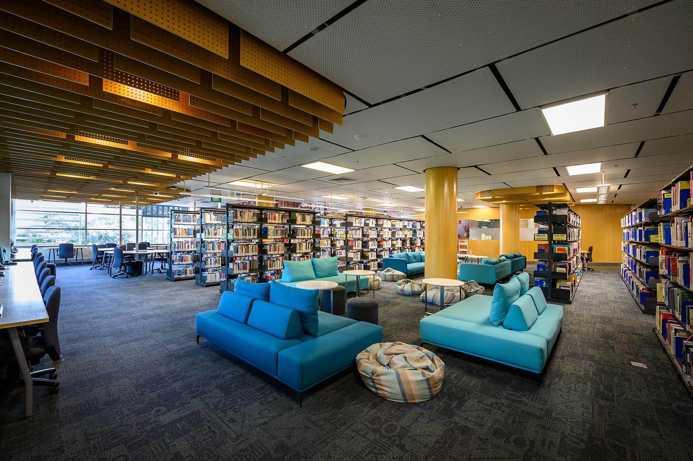

Dang Thien An
Dang Thien An
Dang Thien An
S3863958
NONE 4763
Introduction to SAT is a vastly helpful course for me that extends my knowledge, skills as well as a way to utilize the infrastructure in my campus to develop my abilities in the study process throughout student life. Fortunately, my school is equipped with many modern facilities to serve our learning. For instance, my schools are built with a variety of lab rooms that serve each student’s domains. Especially, there are some labs for my major and they are equipped with many convenient. Furthermore, a library with a huge number of books is able to respond adequate knowledge for all students in each major. In there, it is not only provided books or documents but it is also built and installed many technology devices like printers, computers and places for students can sit in there and learn. Additionally, it is designed several rooms inside the library where allow students can book it and use it for meetings and collaborative working. These are the features that RMIT has brought to me and the students here so I ensure that I appreciate and utilize these resources appropriately for the best result. This is one of my plans to enhance my qualification comprehensively.
Moreover, I am taught many skills and knowledge to use the facilities of my school. Since I entered university, I assume that I must have a high awareness of learning. It means that most of the time I have to independently learn if I want to get good results. I have to research and study by myself to do assignments and expand my knowledge. I need to use and get support from the library as well as labs. That is a reason I am guided to use Library and many research skills including reading, summarising, analyzing, synthesizing, and many ways to use the Library website to choose books, book a room and get support from them. Additionally, I am instructed to use labs to avoid accidents that commonly happen. This is what I will use during my training for the major and that vastly useful for me in improve and advance knowledge.
One more thing, this course prepare for me a lot of novelty things I have to approach a lot in higher education. That helps me figure out about my specialty and lets me know what I have to prepare and learn in the future like creating a website, introduce me to new knowledges I will learn such as embedded programming. Especially is programming. This is a thing I will use a lot throughout my student life and I will attempt to learn and practice more about it to spend more time on new things. Besides, I have met 2 friends who are my classmates in this course. However, we are the different specialties in higher education but relate to each other. I hope that we can cooperate to study and work in the future, that can be a chance for us to exchange, improve our skills and grow together.
